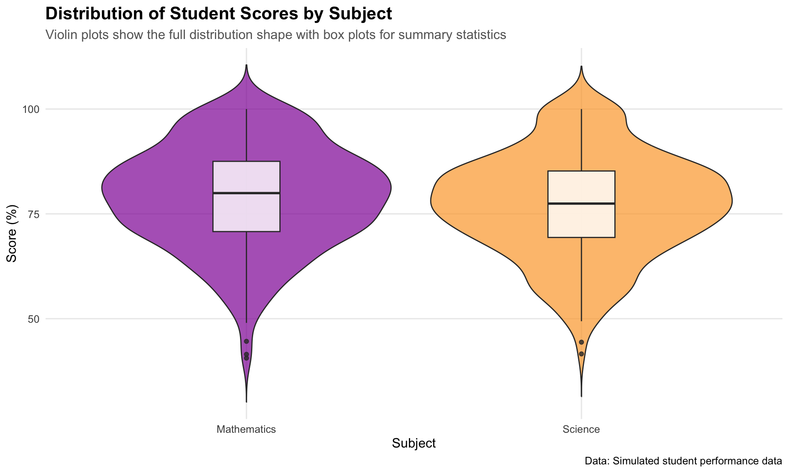
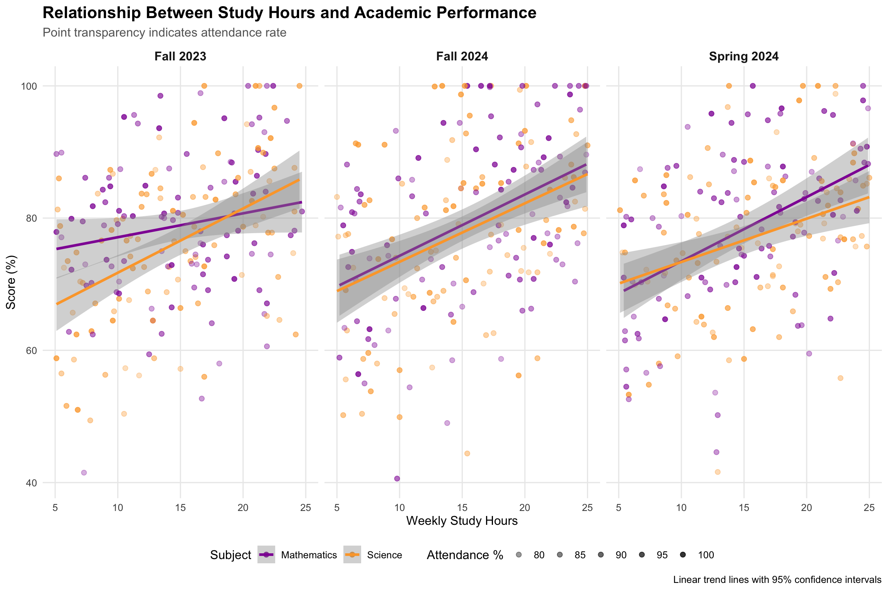
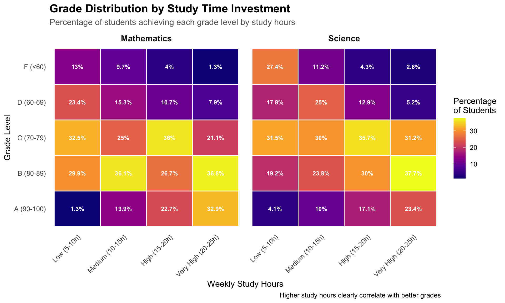

This post demonstrates how to use tidy R code principles with the tidyverse ecosystem to create compelling data visualizations using ggplot2. We’ll explore data manipulation techniques and build publication-ready plots step by step.
The Tidy Data Philosophy
The tidyverse is built around the concept of tidy data, where:
Each variable forms a column
Each observation forms a row
Each value has its own cell
This structure makes data analysis more intuitive and code more readable.
Setup and Data Preparation
First, we load the necessary libraries and create some example data to demonstrate key concepts:
Show the code
# Load the tidyverse (includes dplyr, ggplot2, tidyr, readr, and more)library(tidyverse)library(scales)# Set a custom theme for our plotstheme_set(theme_minimal(base_size =12))# Create example dataset: Student performance across different subjects and semestersset.seed(123)student_data<-tibble( student_id =rep(1:100, each =6), semester =rep(c("Fall 2023", "Spring 2024", "Fall 2024"), times =200), subject =rep(c("Mathematics", "Science"), times =300), score =round(rnorm(600, mean =78, sd =12), 1), study_hours =round(runif(600, min =5, max =25), 1), attendance =round(runif(600, min =75, max =100), 1))%>%# Add some realistic constraintsmutate( score =pmax(0, pmin(100, score)),# Students who study more tend to score higher score =score+(study_hours-mean(study_hours))*0.8,# Better attendance correlates with better scores score =score+(attendance-mean(attendance))*0.3, score =round(pmax(0, pmin(100, score)), 1))# Display the structure of our dataglimpse(student_data)
Let’s explore our data using tidy data manipulation techniques:
Show the code
# Calculate summary statistics by subject and semestersummary_stats<-student_data%>%group_by(subject, semester)%>%summarise( n_students =n_distinct(student_id), avg_score =mean(score, na.rm =TRUE), median_score =median(score, na.rm =TRUE), sd_score =sd(score, na.rm =TRUE), avg_study_hours =mean(study_hours, na.rm =TRUE), avg_attendance =mean(attendance, na.rm =TRUE), .groups ="drop")%>%arrange(subject, semester)# Display the summarysummary_stats%>%knitr::kable(digits =2, caption ="Summary Statistics by Subject and Semester")
Summary Statistics by Subject and Semester
subject
semester
n_students
avg_score
median_score
sd_score
avg_study_hours
avg_attendance
Mathematics
Fall 2023
100
78.82
79.00
11.08
14.75
87.96
Mathematics
Fall 2024
100
79.59
80.70
13.19
15.70
86.86
Mathematics
Spring 2024
100
78.29
80.20
12.32
14.96
87.64
Science
Fall 2023
100
75.90
76.70
12.02
14.28
87.61
Science
Fall 2024
100
77.69
77.95
13.27
14.87
87.17
Science
Spring 2024
100
77.23
77.30
11.29
15.91
87.07
Creating Effective Visualizations
1. Distribution of Scores by Subject
Show the code
# Create a violin plot with box plots overlayp1<-student_data%>%ggplot(aes(x =subject, y =score, fill =subject))+geom_violin(alpha =0.7, trim =FALSE)+geom_boxplot(width =0.2, fill ="white", alpha =0.8)+scale_fill_viridis_d(option ="plasma", begin =0.3, end =0.8)+labs( title ="Distribution of Student Scores by Subject", subtitle ="Violin plots show the full distribution shape with box plots for summary statistics", x ="Subject", y ="Score (%)", caption ="Data: Simulated student performance data")+theme( legend.position ="none", plot.title =element_text(size =16, face ="bold"), plot.subtitle =element_text(size =12, color ="grey40"), panel.grid.minor =element_blank())print(p1)

2. Trend Analysis Across Semesters
Show the code
# Calculate means and confidence intervals for trend analysistrend_data<-student_data%>%group_by(subject, semester)%>%summarise( mean_score =mean(score), se =sd(score)/sqrt(n()), ci_lower =mean_score-1.96*se, ci_upper =mean_score+1.96*se, .groups ="drop")%>%mutate(semester =factor(semester, levels =c("Fall 2023", "Spring 2024", "Fall 2024")))p2<-trend_data%>%ggplot(aes(x =semester, y =mean_score, color =subject, group =subject))+geom_ribbon(aes(ymin =ci_lower, ymax =ci_upper, fill =subject), alpha =0.2, color =NA)+geom_line(size =1.2)+geom_point(size =3)+scale_color_viridis_d(option ="plasma", begin =0.3, end =0.8)+scale_fill_viridis_d(option ="plasma", begin =0.3, end =0.8)+labs( title ="Student Performance Trends Across Semesters", subtitle ="Mean scores with 95% confidence intervals", x ="Semester", y ="Average Score (%)", color ="Subject", fill ="Subject", caption ="Shaded areas represent 95% confidence intervals")+theme( plot.title =element_text(size =16, face ="bold"), plot.subtitle =element_text(size =12, color ="grey40"), legend.position ="bottom", panel.grid.minor =element_blank(), axis.text.x =element_text(angle =45, hjust =1))
Warning: Using `size` aesthetic for lines was deprecated in ggplot2 3.4.0.
ℹ Please use `linewidth` instead.
3. Relationship Between Study Time and Performance
Show the code
# Create a sophisticated scatter plot with trend linesp3<-student_data%>%ggplot(aes(x =study_hours, y =score))+geom_point(aes(color =subject, alpha =attendance), size =2)+geom_smooth(aes(color =subject), method ="lm", se =TRUE, size =1.2)+scale_color_viridis_d(option ="plasma", begin =0.3, end =0.8)+scale_alpha_continuous(range =c(0.3, 0.8), name ="Attendance %")+labs( title ="Relationship Between Study Hours and Academic Performance", subtitle ="Point transparency indicates attendance rate", x ="Weekly Study Hours", y ="Score (%)", color ="Subject", caption ="Linear trend lines with 95% confidence intervals")+facet_wrap(~semester, ncol =3)+theme( plot.title =element_text(size =16, face ="bold"), plot.subtitle =element_text(size =12, color ="grey40"), legend.position ="bottom", panel.grid.minor =element_blank(), strip.text =element_text(size =12, face ="bold"))print(p3)
`geom_smooth()` using formula = 'y ~ x'

4. Advanced: Heat Map of Performance Patterns
Show the code
# Create performance bins and calculate percentagesheatmap_data<-student_data%>%mutate( study_bins =cut(study_hours, breaks =c(0, 10, 15, 20, 25), labels =c("Low (5-10h)", "Medium (10-15h)", "High (15-20h)", "Very High (20-25h)"), include.lowest =TRUE), score_grade =case_when(score>=90~"A (90-100)",score>=80~"B (80-89)",score>=70~"C (70-79)",score>=60~"D (60-69)",TRUE~"F (<60)"))%>%count(study_bins, score_grade, subject)%>%group_by(study_bins, subject)%>%mutate(percentage =n/sum(n)*100)%>%ungroup()p4<-heatmap_data%>%ggplot(aes(x =study_bins, y =score_grade, fill =percentage))+geom_tile(color ="white", size =0.5)+geom_text(aes(label =paste0(round(percentage, 1), "%")), color ="white", fontface ="bold", size =3)+scale_fill_viridis_c(option ="plasma", name ="Percentage\nof Students")+labs( title ="Grade Distribution by Study Time Investment", subtitle ="Percentage of students achieving each grade level by study hours", x ="Weekly Study Hours", y ="Grade Level", caption ="Higher study hours clearly correlate with better grades")+facet_wrap(~subject)+theme( plot.title =element_text(size =16, face ="bold"), plot.subtitle =element_text(size =12, color ="grey40"), axis.text.x =element_text(angle =45, hjust =1), panel.grid =element_blank(), strip.text =element_text(size =12, face ="bold"))print(p4)

Tidy Code Best Practices Demonstrated
Throughout this analysis, we’ve followed key tidy R principles:
1. Pipe Operator (%>%) for Readable Code Flow
Show the code
# Instead of nested functions:# plot(summary(filter(data, condition)))# Use pipes for clarity:data%>%filter(condition)%>%summary()%>%plot()
Tidy data structure makes analysis intuitive and code readable
dplyr verbs (filter, mutate, summarise, group_by) provide powerful data manipulation
ggplot2’s grammar of graphics enables building complex visualizations systematically
Consistent styling and theming makes plots publication-ready
Pipe operator creates readable analysis workflows
The tidyverse ecosystem provides a coherent framework for data science that emphasizes code readability, reproducibility, and elegant solutions to common data challenges.
---title: "Mastering Tidy R: Data Visualization with tidyverse and ggplot2"date: 5 June, 2025date-format: "DD MMM, YYYY"author: - name: Andrew Ellis url: https://github.com/awellis affiliation: Virtual Academy, Bern University of Applied Sciences affiliation-url: https://virtuelleakademie.ch orcid: 0000-0002-2788-936Xcategories: [R, ggplot2, tidyverse, data visualization, tutorial]format: html: code-fold: true code-tools: true code-summary: "Show the code" toc: true---This post demonstrates how to use tidy R code principles with the `tidyverse` ecosystem to create compelling data visualizations using `ggplot2`. We'll explore data manipulation techniques and build publication-ready plots step by step.## The Tidy Data PhilosophyThe tidyverse is built around the concept of **tidy data**, where:- Each variable forms a column- Each observation forms a row - Each value has its own cellThis structure makes data analysis more intuitive and code more readable.## Setup and Data PreparationFirst, we load the necessary libraries and create some example data to demonstrate key concepts:```{r}#| message: false#| warning: false# Load the tidyverse (includes dplyr, ggplot2, tidyr, readr, and more)library(tidyverse)library(scales)# Set a custom theme for our plotstheme_set(theme_minimal(base_size =12))# Create example dataset: Student performance across different subjects and semestersset.seed(123)student_data <-tibble(student_id =rep(1:100, each =6),semester =rep(c("Fall 2023", "Spring 2024", "Fall 2024"), times =200),subject =rep(c("Mathematics", "Science"), times =300),score =round(rnorm(600, mean =78, sd =12), 1),study_hours =round(runif(600, min =5, max =25), 1),attendance =round(runif(600, min =75, max =100), 1)) %>%# Add some realistic constraintsmutate(score =pmax(0, pmin(100, score)),# Students who study more tend to score higherscore = score + (study_hours -mean(study_hours)) *0.8,# Better attendance correlates with better scoresscore = score + (attendance -mean(attendance)) *0.3,score =round(pmax(0, pmin(100, score)), 1) )# Display the structure of our dataglimpse(student_data)```## Data Exploration with dplyrLet's explore our data using tidy data manipulation techniques:```{r}# Calculate summary statistics by subject and semestersummary_stats <- student_data %>%group_by(subject, semester) %>%summarise(n_students =n_distinct(student_id),avg_score =mean(score, na.rm =TRUE),median_score =median(score, na.rm =TRUE),sd_score =sd(score, na.rm =TRUE),avg_study_hours =mean(study_hours, na.rm =TRUE),avg_attendance =mean(attendance, na.rm =TRUE),.groups ="drop" ) %>%arrange(subject, semester)# Display the summarysummary_stats %>% knitr::kable(digits =2, caption ="Summary Statistics by Subject and Semester")```## Creating Effective Visualizations### 1. Distribution of Scores by Subject```{r}#| fig-width: 10#| fig-height: 6# Create a violin plot with box plots overlayp1 <- student_data %>%ggplot(aes(x = subject, y = score, fill = subject)) +geom_violin(alpha =0.7, trim =FALSE) +geom_boxplot(width =0.2, fill ="white", alpha =0.8) +scale_fill_viridis_d(option ="plasma", begin =0.3, end =0.8) +labs(title ="Distribution of Student Scores by Subject",subtitle ="Violin plots show the full distribution shape with box plots for summary statistics",x ="Subject",y ="Score (%)",caption ="Data: Simulated student performance data" ) +theme(legend.position ="none",plot.title =element_text(size =16, face ="bold"),plot.subtitle =element_text(size =12, color ="grey40"),panel.grid.minor =element_blank() )print(p1)```### 2. Trend Analysis Across Semesters```{r}#| fig-width: 12#| fig-height: 8# Calculate means and confidence intervals for trend analysistrend_data <- student_data %>%group_by(subject, semester) %>%summarise(mean_score =mean(score),se =sd(score) /sqrt(n()),ci_lower = mean_score -1.96* se,ci_upper = mean_score +1.96* se,.groups ="drop" ) %>%mutate(semester =factor(semester, levels =c("Fall 2023", "Spring 2024", "Fall 2024")))p2 <- trend_data %>%ggplot(aes(x = semester, y = mean_score, color = subject, group = subject)) +geom_ribbon(aes(ymin = ci_lower, ymax = ci_upper, fill = subject), alpha =0.2, color =NA) +geom_line(size =1.2) +geom_point(size =3) +scale_color_viridis_d(option ="plasma", begin =0.3, end =0.8) +scale_fill_viridis_d(option ="plasma", begin =0.3, end =0.8) +labs(title ="Student Performance Trends Across Semesters",subtitle ="Mean scores with 95% confidence intervals",x ="Semester",y ="Average Score (%)",color ="Subject",fill ="Subject",caption ="Shaded areas represent 95% confidence intervals" ) +theme(plot.title =element_text(size =16, face ="bold"),plot.subtitle =element_text(size =12, color ="grey40"),legend.position ="bottom",panel.grid.minor =element_blank(),axis.text.x =element_text(angle =45, hjust =1) )print(p2)```### 3. Relationship Between Study Time and Performance```{r}#| fig-width: 12#| fig-height: 8# Create a sophisticated scatter plot with trend linesp3 <- student_data %>%ggplot(aes(x = study_hours, y = score)) +geom_point(aes(color = subject, alpha = attendance), size =2) +geom_smooth(aes(color = subject), method ="lm", se =TRUE, size =1.2) +scale_color_viridis_d(option ="plasma", begin =0.3, end =0.8) +scale_alpha_continuous(range =c(0.3, 0.8), name ="Attendance %") +labs(title ="Relationship Between Study Hours and Academic Performance",subtitle ="Point transparency indicates attendance rate",x ="Weekly Study Hours",y ="Score (%)",color ="Subject",caption ="Linear trend lines with 95% confidence intervals" ) +facet_wrap(~semester, ncol =3) +theme(plot.title =element_text(size =16, face ="bold"),plot.subtitle =element_text(size =12, color ="grey40"),legend.position ="bottom",panel.grid.minor =element_blank(),strip.text =element_text(size =12, face ="bold") )print(p3)```### 4. Advanced: Heat Map of Performance Patterns```{r}#| fig-width: 10#| fig-height: 6# Create performance bins and calculate percentagesheatmap_data <- student_data %>%mutate(study_bins =cut(study_hours, breaks =c(0, 10, 15, 20, 25),labels =c("Low (5-10h)", "Medium (10-15h)", "High (15-20h)", "Very High (20-25h)"),include.lowest =TRUE),score_grade =case_when( score >=90~"A (90-100)", score >=80~"B (80-89)", score >=70~"C (70-79)", score >=60~"D (60-69)",TRUE~"F (<60)" ) ) %>%count(study_bins, score_grade, subject) %>%group_by(study_bins, subject) %>%mutate(percentage = n /sum(n) *100) %>%ungroup()p4 <- heatmap_data %>%ggplot(aes(x = study_bins, y = score_grade, fill = percentage)) +geom_tile(color ="white", size =0.5) +geom_text(aes(label =paste0(round(percentage, 1), "%")), color ="white", fontface ="bold", size =3) +scale_fill_viridis_c(option ="plasma", name ="Percentage\nof Students") +labs(title ="Grade Distribution by Study Time Investment",subtitle ="Percentage of students achieving each grade level by study hours",x ="Weekly Study Hours",y ="Grade Level",caption ="Higher study hours clearly correlate with better grades" ) +facet_wrap(~subject) +theme(plot.title =element_text(size =16, face ="bold"),plot.subtitle =element_text(size =12, color ="grey40"),axis.text.x =element_text(angle =45, hjust =1),panel.grid =element_blank(),strip.text =element_text(size =12, face ="bold") )print(p4)```## Tidy Code Best Practices DemonstratedThroughout this analysis, we've followed key tidy R principles:### 1. **Pipe Operator (`%>%`)** for Readable Code Flow```{r eval=FALSE}# Instead of nested functions:# plot(summary(filter(data, condition)))# Use pipes for clarity:data %>%filter(condition) %>%summary() %>%plot()```### 2. **Consistent Grammar of Graphics**- Data (`data =`)- Aesthetics (`aes()`)- Geometries (`geom_*()`)- Scales (`scale_*()`)- Themes (`theme()`)### 3. **Meaningful Variable Names and Grouping**```{r eval=FALSE}# Group operations clearlystudent_data %>%group_by(subject, semester) %>%summarise(avg_score =mean(score)) %>%ungroup()```### 4. **Functional Approach with Consistent Styling**- Use `snake_case` for variable names- Keep line length reasonable- Add meaningful labels and captions- Use consistent color schemes## Key Takeaways1. **Tidy data structure** makes analysis intuitive and code readable2. **dplyr verbs** (`filter`, `mutate`, `summarise`, `group_by`) provide powerful data manipulation3. **ggplot2's grammar of graphics** enables building complex visualizations systematically4. **Consistent styling and theming** makes plots publication-ready5. **Pipe operator** creates readable analysis workflowsThe tidyverse ecosystem provides a coherent framework for data science that emphasizes code readability, reproducibility, and elegant solutions to common data challenges.
![]()